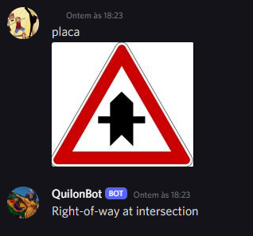

Bot Discord e resultados
Foi criado um bot para o discord, onde nele teremos a interação com o usuário, onde ele enviará uma imagem e o BOT irá retornar o nome da placa.
Para isto, criamos um evento de listening do canal usado a partir do envio de uma imagem em formato .png. Esse evento é escutado pelo bot, no qual recebemos a imagem e ela já é tratada nos padrões que precisamos.
Resultado da IA com o Bot
